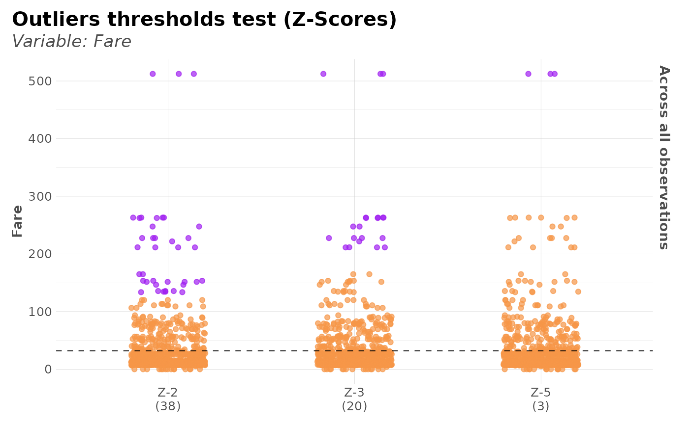

Test several Z-score thresholds to visualize outliers. Tidyverse friendly.
Usage
outlier_zscore_plot(df, var, group = NULL, thresh = c(2, 3, 5), top = 5)See also
Other Outliers:
outlier_tukey(),
outlier_zscore(),
winsorize()
Examples
Sys.unsetenv("LARES_FONT") # Temporal
data(dft) # Titanic dataset
outlier_zscore_plot(dft, Fare)

p <- outlier_zscore_plot(dft, Fare, Pclass, thresh = c(3, 5))
plot(p)
 attr(p, "z_values")
#> [,1] [,2] [,3] [,4]
#> [1,] 3 35.33443 235.1411 40.25220
#> [2,] 5 58.89071 391.9019 67.08699
head(attr(p, "z_labels"))
#> # A tibble: 6 × 6
#> Fare `Z-3` `Z-5` outlier_std outlier_mean outlier_group
#> <dbl> <lgl> <lgl> <dbl> <dbl> <int>
#> 1 7.25 FALSE FALSE 11.8 13.7 3
#> 2 71.3 FALSE FALSE 78.4 84.2 1
#> 3 7.92 FALSE FALSE 11.8 13.7 3
#> 4 53.1 FALSE FALSE 78.4 84.2 1
#> 5 8.05 FALSE FALSE 11.8 13.7 3
#> 6 8.46 FALSE FALSE 11.8 13.7 3
attr(p, "z_values")
#> [,1] [,2] [,3] [,4]
#> [1,] 3 35.33443 235.1411 40.25220
#> [2,] 5 58.89071 391.9019 67.08699
head(attr(p, "z_labels"))
#> # A tibble: 6 × 6
#> Fare `Z-3` `Z-5` outlier_std outlier_mean outlier_group
#> <dbl> <lgl> <lgl> <dbl> <dbl> <int>
#> 1 7.25 FALSE FALSE 11.8 13.7 3
#> 2 71.3 FALSE FALSE 78.4 84.2 1
#> 3 7.92 FALSE FALSE 11.8 13.7 3
#> 4 53.1 FALSE FALSE 78.4 84.2 1
#> 5 8.05 FALSE FALSE 11.8 13.7 3
#> 6 8.46 FALSE FALSE 11.8 13.7 3